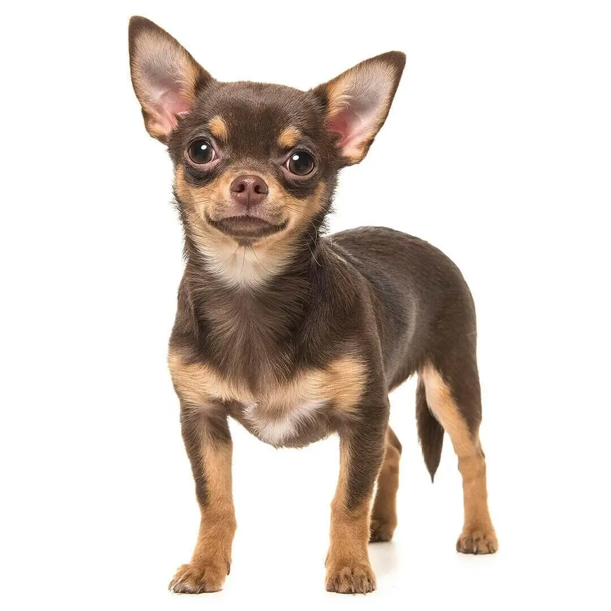

Daniela's labels
Apuntes

Animals
Oct 20, 2024

Biblioteca de razas
Chihuahua
Son los perros más pequeños que hay, su cráneo tiene forma de manzana y el pelo es suave, fino y corto.
Los colores van desde el beis al negro. Un adulto compacto y delicado suele medir entre 15 y 23 cm y pesar de 1,8 a 2,7 kg.
6.5k Likes
56 Comentarios
Hace 2 horas